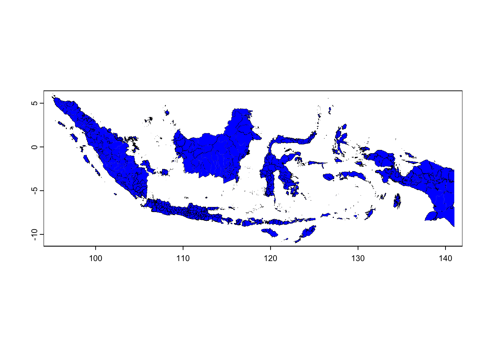
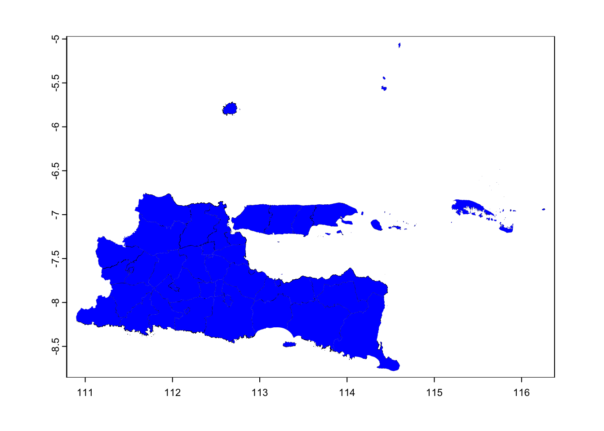
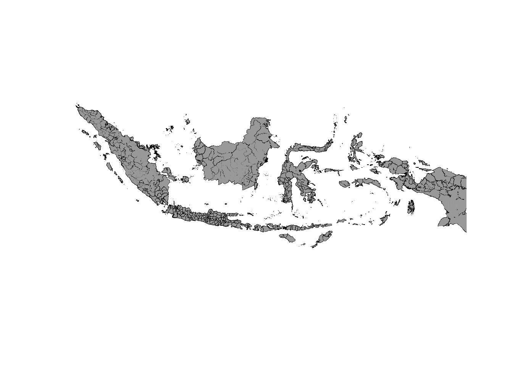
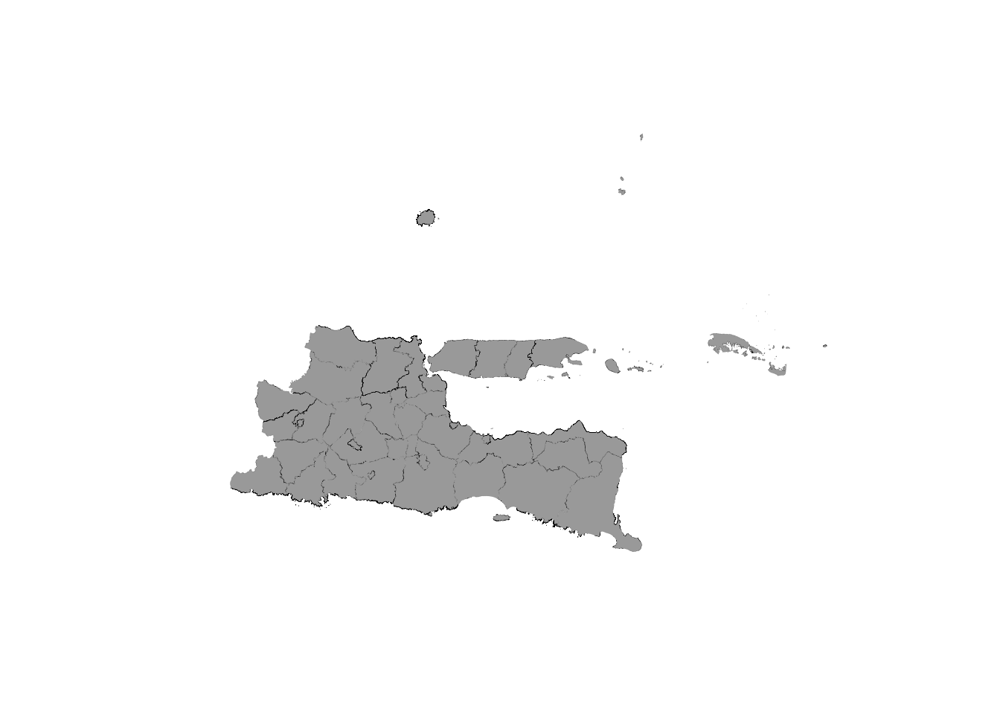

Sys.setenv(PROJ_LIB = "/Users/chakraroy/miniconda3/pkgs/proj-9.4.1-hf92c781_1/share/proj/proj.db")
Sys.setenv(GDAL_DATA = "/Users/chakraroy/miniconda3/pkgs/gdal-3.6.2-py312hfe88152_5/")Membuat Peta Dasar
Article ini membahas tentang statistik indonesia sebagai cartography dasar untuk mengembangkan analisis lebih lanjut. Pada peta ini, kita akan menggunakan code sederhana dengan tiga bahasa sekaligus.
Persiapan Modul dan Environment
Untuk memastikan renv yang kita gunakan, bekerja pada environment python yang sesuai dengan apa yang kita rencanakan untuk digunakan, kita perlu memastikan bahwa RStudio menggunakan atau mengaktifkan environment python yang telah kita siapkan.
Untuk melakukan analisis, kita akan menggunakan beberapa module yang untuk setiap interpreter memiliki cara yang berbeda. Dalam artikel ini, kita akan menggunakan Python, R, dan Julia.
Load shapefile yang telah di download dari situs https://www.lapakgis.com/p/shapefile.html. Pada situs itu kita bisa memilih jenis data yang ingin kita gunakan dalam analisis. Password-nya bisa dilihat di https://docs.google.com/document/d/1ap_EgshJbywLgP5ZJ2iJMAFnWngLLKsoDaAF281vCxQ/edit?pli=1. Untuk memahami bagaimana python bekerja dengan GIS, bisa merujuk pada link berikut ini: https://automating-gis-processes.github.io/CSC/notebooks/L2/geopandas-basics.html.
Konsep Dasar
Pemanfaatan energi surya sebagai sumber daya terbarukan berkembang pesat. Pemasangan Pembangkit Listrik Tenaga Surya (PLTS) menjadi solusi utama dalam mendukung pengembangan energi berkelanjutan. Dalam perencanaan pembangunan PLTS, informasi potensi surya menjadi krusial. Salah satu alat yang efektif untuk mengakses data potensi surya adalah penggunaan Shapefile atau SHP dan perannya dalam Sistem Informasi Geografis (SIG).
Dengan memanfaatkan Shapefile, analisis potensi surya dapat dilakukan dengan lebih efisien. Data yang relevan tentang topografi, cakupan lahan, dan kondisi iklim suatu wilayah dapat dimasukkan ke dalam Shapefile. Hal ini memungkinkan perencana energi untuk mengidentifikasi lokasi potensial untuk pembangunan PLTS dengan akurasi yang lebih tinggi.
Global Horizontal Irradiance (GHI)
Global Horizontal Irradiance (GHI) umumnya merupakan parameter yang paling relevan saat merencanakan pemasangan Pembangkit Listrik Tenaga Surya (PLTS). GHI mencakup total radiasi surya yang diterima oleh permukaan horizontal, termasuk radiasi langsung dan difusi. Hal ini memberikan estimasi potensi energi surya yang dapat dihasilkan di suatu lokasi, tanpa mempertimbangkan orientasi atau kemiringan panel.
Memahami GHI di suatu wilayah dapat membantu dalam merencanakan pemasangan PLTS yang optimal. Faktor-faktor seperti penempatan panel, efisiensi konversi energi, dan perhitungan permintaan daya dapat ditentukan berdasarkan data GHI. Selain itu, GHI dapat digunakan untuk memperkirakan produksi energi surya selama periode waktu tertentu, seperti harian atau tahunan.
Lebih jauh, ada dua parameter tambahan yang penting dalam mengevaluasi dan merencanakan pemasangan Pembangkit Listrik Tenaga Surya (PLTS) secara efektif: Output Daya Fotovoltaik Spesifik (PVOUT) dan Irradiansi Normal Langsung (DNI).
Output Daya Fotovoltaik Spesifik (PVOUT)
PVOUT mengacu pada output daya listrik per unit kapasitas terpasang sistem fotovoltaik (PV). Dalam konteks PLTS, PVOUT memberikan estimasi seberapa efisien panel surya dapat mengubah energi surya menjadi listrik. Pengukuran PVOUT didasarkan pada karakteristik kinerja panel surya yang dipasang di lokasi tertentu.
Penggunaan PVOUT dalam Shapefile memungkinkan perencana energi untuk memahami seberapa produktif suatu wilayah dalam menghasilkan tenaga listrik dari sumber energi surya. Mengintegrasikan data PVOUT ke dalam Shapefile memberikan pandangan yang lebih holistik tentang potensi SPP, yang memungkinkan pemilihan teknologi panel yang sesuai berdasarkan kondisi geografis dan iklim suatu wilayah.
Direct Normal Irradiance (DNI)
DNI mengukur radiasi surya yang mencapai permukaan Bumi secara langsung tanpa terhalang oleh awan atau partikel atmosfer. Ini merupakan parameter penting karena panel fotovoltaik, khususnya yang menggunakan konsentrator surya, lebih efisien dalam menghasilkan listrik saat terkena sinar matahari langsung.
Dengan menggabungkan informasi DNI ke dalam Shapefile, perencana energi dapat menentukan lokasi dengan intensitas sinar matahari langsung yang lebih tinggi. Ini penting karena SPP yang mengandalkan sinar matahari langsung dapat mencapai hasil optimal di wilayah dengan nilai DNI yang tinggi. Hasilnya, peningkatan efisiensi dapat dicapai dengan memilih lokasi yang tepat berdasarkan data DNI.️
Analysis
Langkah-langkah:
Unduh Peta Lokasi Study:
- Anda bisa mendapatkan peta administrasi Indonesia dari sumber terbuka seperti peta.web.id atau Wikipedia.
Unduh Data GHI:
- Data GHI dapat diunduh dari Global Solar Atlas yang disediakan oleh World Bank Group.
Instalasi Paket Python:
- Pastikan Anda memiliki paket-paket berikut terinstal:
geopandas,rasterio,matplotlib,numpy.
- Pastikan Anda memiliki paket-paket berikut terinstal:
Overlay Peta dan Data GHI:
- Gunakan
geopandasuntuk memuat peta danrasteriountuk memuat data GHI.
- Gunakan
Analisis PVOUT:
- Gunakan
pvlibuntuk menghitung potensi output energi dari solar PV.
- Gunakan
Kode Python:
Langkah paling awal adalah memuat shapefile
Kumpulan data analysis bisa ditemukan di https://energydata.info atau https://globalsolaratlas.info/global-pv-potential-study. Sementara shapefile untuk batas administrasi hingga tingkat desa bisa di dapatkan pada https://geosai.my.id/download-data-batas-desa-per-kabupaten-kota-seluruh-indonesia-edisi-september-2023/.
Jika menggunakan python, instruksinya sederhana, seperti berikut ini:
import geopandas as gpd
import matplotlib.pyplot as plt
# Membaca shapefile
shapefile_path = 'data/LapakGIS_Batas_Kabupaten_2024.shp'
gdf = gpd.read_file(shapefile_path)Namun sepertinya kita akan menemukan masalah karena ukuran file yang terlalu besa untuk dihandle oleh pandas maupun geopandas. Untuk itu kita akan coba menggunakan cara lain, dengan menggunakan julia atau juga menggunakan R. Jika menggunakan Julia, berikut adalah contoh codenya:
using Shapes
using Plots
# Baca fie SHP secara bertahap
shp = Shapes.shapefile('data/LapakGIS_Batas_Kabupaten_2024.shp')
for feature in shp
# Lakukan sesuatu dengan setiap fitur, misalnya:
geometry = feature.geometry
# Plot geometry
Plots.plot!(geometry)Tetapi kita akan menggunakan R, karena cukup powerfull dalam menangani hal ini berdasarkan rekomendasi yang kami temukan dari hasil desktop research kami.
Menggunakan Terra
library(sf)
library(terra)
# Bace shapefile
shapefile_path <- "data/LapakGIS_Batas_Kabupaten_2024.shp"
shp_sf <- st_read(shapefile_path, options = "XY")options: XY
Reading layer `LapakGIS_Batas_Kabupaten_2024' from data source
`/Users/chakraroy/Documents/BlogKu/posts/map_indonesia/data/LapakGIS_Batas_Kabupaten_2024.shp'
using driver `ESRI Shapefile'
Simple feature collection with 533 features and 6 fields
Geometry type: MULTIPOLYGON
Dimension: XY, XYZ
Bounding box: xmin: 94.97191 ymin: -11.00762 xmax: 141.02 ymax: 6.076832
z_range: zmin: -2.35e-05 zmax: 0
Geodetic CRS: WGS 84# konversi objek sf ke terra
shp_terra <- vect(shp_sf)
plot(shp_terra, col = "blue", lwd = 0.03)

jawa_timur <- shp_terra[shp_terra$WADMPR == "Jawa Timur", ]
plot(jawa_timur, col = "blue", lwd = 0.03)

shp_sfSimple feature collection with 533 features and 6 fields
Geometry type: MULTIPOLYGON
Dimension: XY, XYZ
Bounding box: xmin: 94.97191 ymin: -11.00762 xmax: 141.02 ymax: 6.076832
z_range: zmin: -2.35e-05 zmax: 0
Geodetic CRS: WGS 84
First 10 features:
KDPKAB KDPPUM WADMKK WADMPR
1 <NA> <NA> <NA> <NA>
2 <NA> <NA> <NA> Jawa Timur
3 <NA> 13 <NA> Sumatera Barat
4 <NA> 61 <NA> Kalimantan Barat
5 <NA> 81 <NA> Maluku
6 <NA> 82 <NA> Maluku Utara
7 11.01 11 Aceh Selatan Aceh
8 11.02 11 Aceh Tenggara Aceh
9 11.03 11 Aceh Timur Aceh
10 11.04 11 Aceh Tengah Aceh
METADATA UPDATED
1 TASWIL1000020230928_DATA_BATAS_KABUPATEN Lapak GIS - 2024
2 TASWIL1000020230928_DATA_BATAS_KABUPATEN Lapak GIS - 2024
3 TASWIL1000020230928_DATA_BATAS_KABUPATEN Lapak GIS - 2024
4 TASWIL1000020230928_DATA_BATAS_KABUPATEN Lapak GIS - 2024
5 TASWIL1000020230928_DATA_BATAS_KABUPATEN Lapak GIS - 2024
6 TASWIL1000020230928_DATA_BATAS_KABUPATEN Lapak GIS - 2024
7 TASWIL1000020230928_DATA_BATAS_KABUPATEN Lapak GIS - 2024
8 TASWIL1000020230928_DATA_BATAS_KABUPATEN Lapak GIS - 2024
9 TASWIL1000020230928_DATA_BATAS_KABUPATEN Lapak GIS - 2024
10 TASWIL1000020230928_DATA_BATAS_KABUPATEN Lapak GIS - 2024
geometry
1 MULTIPOLYGON (((98.17921 2....
2 MULTIPOLYGON Z (((112.8793 ...
3 MULTIPOLYGON (((100.3296 -1...
4 MULTIPOLYGON (((109.252 -0....
5 MULTIPOLYGON (((127.4581 -5...
6 MULTIPOLYGON (((127.9225 0....
7 MULTIPOLYGON (((97.59379 2....
8 MULTIPOLYGON Z (((97.8248 3...
9 MULTIPOLYGON (((98.01775 4....
10 MULTIPOLYGON Z (((96.62116 ...Menggunakan lwgeom
library(sf)
library(lwgeom)
shp <- st_read(shapefile_path, options = "Z")options: Z
Reading layer `LapakGIS_Batas_Kabupaten_2024' from data source
`/Users/chakraroy/Documents/BlogKu/posts/map_indonesia/data/LapakGIS_Batas_Kabupaten_2024.shp'
using driver `ESRI Shapefile'
Simple feature collection with 533 features and 6 fields
Geometry type: MULTIPOLYGON
Dimension: XY, XYZ
Bounding box: xmin: 94.97191 ymin: -11.00762 xmax: 141.02 ymax: 6.076832
z_range: zmin: -2.35e-05 zmax: 0
Geodetic CRS: WGS 84plot(st_geometry(shp), col = "darkgrey", lwd = 0.03)

Plot dengan ggplot2 ->
Tidak direkomendasikan untuk system yang saya gunakan saat ini! coba hanya menggunakan sf, terra dan lwgeom.
jawa_timur <- shp[shp$WADMPR == "Jawa Timur", ]
plot(st_geometry(jawa_timur), col = "darkgrey", lwd = 0.03)
